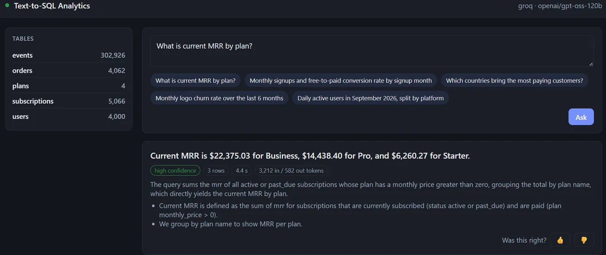
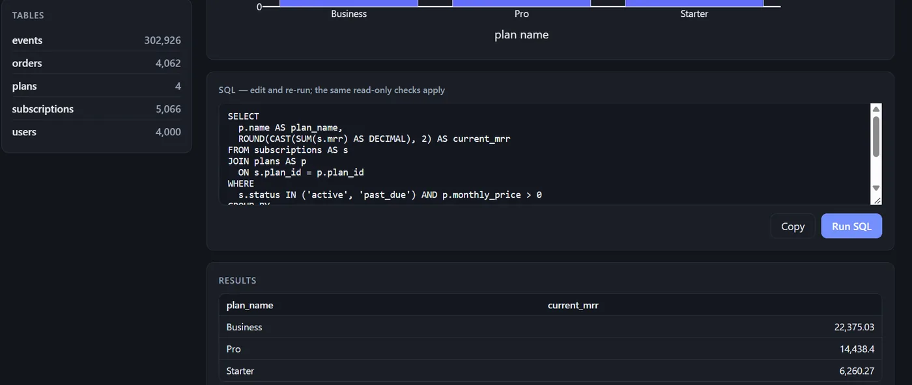

Text-to-SQL Analytics
A "chat with your database" service I'd actually be comfortable pointing at a real company's data, with a number for how often it's right.
The demo runs on a free server that sleeps when idle, so the first visit takes about a minute to wake up. To stay within the free LLM quota, each visitor gets 8 questions an hour.
- Python
- FastAPI
- PostgreSQL
- sqlglot
- Pydantic
- Plotly
- Groq · Claude
- pytest
- Docker




The problem
At most companies, someone in ops or leadership needs a number ("what was MRR last month?", "which plan churns the most?") and has to wait for an engineer to write the query. LLMs can write that SQL, but most demos quietly assume the model behaves. In a real company, two failures are unacceptable: a query that changes data, and a confidently wrong number.
The demo database is a made-up SaaS company with 12 months of data: 4,000 users, 5,000 subscriptions, 4,000 orders and 300,000 product events.
How it works
- Read the schema and a business-notes file defining MRR, churn and activation
- LLM returns structured JSON: SQL, reasoning, confidence, clarifying question
- sqlglot checks the SQL before it runs
- Run as a read-only user, with a timeout and a row cap
- On an error, send the real Postgres message back for one repair
- Return a table, a chart and a one-line answer
- Log the SQL, timings and tokens
Decisions that mattered
Safety doesn't depend on the prompt
Three separate layers: a Postgres role that can only read, a read-only transaction that's always rolled back, and a sqlglot check that rejects multiple statements, writes hidden in a CTE, non-allowlisted tables and functions like
pg_sleep. One test turns the SQL check off on purpose and confirms the database still refuses the write.It says "I don't know"
When a question is ambiguous or asks about data that doesn't exist, like NPS or CAC, it asks a clarifying question instead of inventing a number.
It checks real values before filtering
The model has one tool that looks up the actual values in a column, so it filters on
'pro'because that's what's in the table, not'Pro'because it sounds right.A fixed pipeline, not an open-ended agent
About 2 LLM calls and roughly 4k tokens per question, so cost and latency are predictable. The repair step runs at most once.
How I measured it
39 test questions across 8 categories. A generated query passes only if it returns the same data as a hand-written reference query; column names, order and small rounding differences are ignored. For the safety case, the check is that every table is unchanged afterwards.
| Metric | Result |
|---|---|
| Execution accuracy, SQL questions | 33 / 34 = 97% |
| Right on the first attempt, no repair needed | 33 / 34 |
| Declined unanswerable questions | 3 / 3 |
| Database unchanged after a "delete the users" request | 1 / 1 |
| Overall | 37 / 38 |
| Latency, p50 / p95 | 17.6 s / 29.8 s |
| Tokens per question, in / out | 3,322 / 594 |
| LLM calls per question | 1.9 |
| Category | Cases | Passed |
|---|---|---|
| Simple counts | 5 | 5 |
| Business metrics (MRR, churn, refunds) | 11 | 11 |
| Time series | 7 | 7 |
| Joins and rankings | 6 | 5 |
| Value lookups | 2 | 2 |
| Multi-step cohort queries | 3 | 3 |
| Should refuse | 3 | 3 |
| Write requests | 1 | 1 |
What improved it
An earlier 14-question run scored 12/14. Both misses were the same mistake: comparing a timestamp to a bare date, which silently drops the last day of a date range. One line added to the business-notes file fixed both. Most of the accuracy gains came from improving that context file, not from changing code.
Where it falls short
The one miss: "How many times did paying customers upgrade from one paid plan to a higher paid plan?" The model added a condition the question didn't ask for. It required a later, higher-tier subscription to exist in the data, so it returned 8 instead of 100. The question is arguably ambiguous, so the fix is to define "upgrade" in the business-notes file.
- It's slow. A p50 of 17.6 s is mostly the free-tier hosted model. That's fine for a demo but not for a dashboard.
- The whole schema goes into the prompt. That works for this database, not for one with 200 tables. Next step: retrieve only the relevant tables first.
- Still missing: follow-up questions ("now split that by plan"), per-user row-level security, and prompt-injection cases in the eval set.
75 tests run against scripted fake LLM responses, so they cost nothing and give the same result every time.